Бологое
Экономика
Бологовский арматурный завод
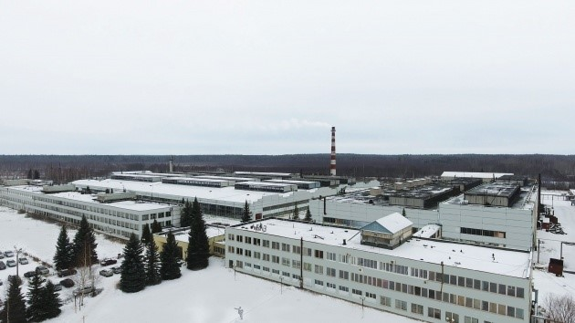 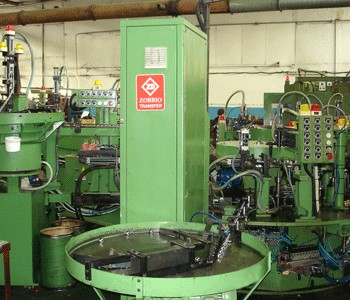 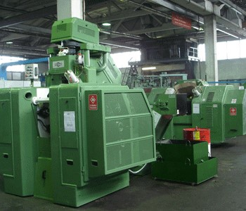 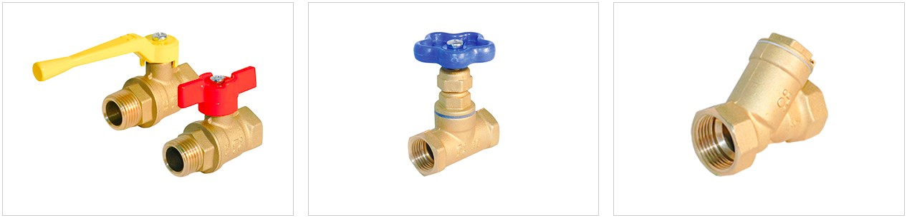 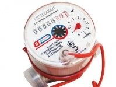Свою деятельность по выпуску арматуры завод начал в 1978 году, а пуск его основных производственных мощностей состоялся в 1981-82 гг. В 1992 году, по решению трудового коллектива, предприятие было реорганизовано и получило статус акционерного общества.
ОАО «БАЗ» - это предприятие с полной инфраструктурой, имеющее собственную подстанцию, водозабор, котельную.
Сегодня "Бологовский арматурный завод" переживает новый виток своего развития. На заводе работает более 600 сотрудников. Завод, наравне с подразделениями РЖД, является градообразующим предприятием.
Выпускается арматурная продукция более чем 26 наименований , внедрена система постоянной проверки качества выпускаемой продукции, работают представительства, дилеры во многих городах России.
Основной ассортимент продукции предприятия составляет арматура, изготавливаемая из цветных металлов: фитинги, шаровые краны, вентили, затворы, счетчики и фильтры.
Свою деятельность по выпуску арматуры завод начал в 1978 году, а пуск его основных производственных мощностей состоялся в 1981-82 гг. В 1992 году, по решению трудового коллектива, предприятие было реорганизовано и получило статус акционерного общества.
ОАО «Стекольный завод им. Луначарского» (поселок Березайка)
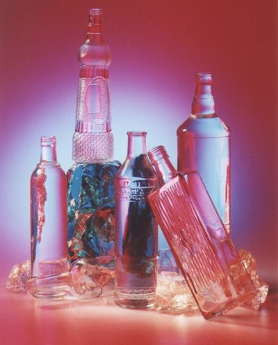 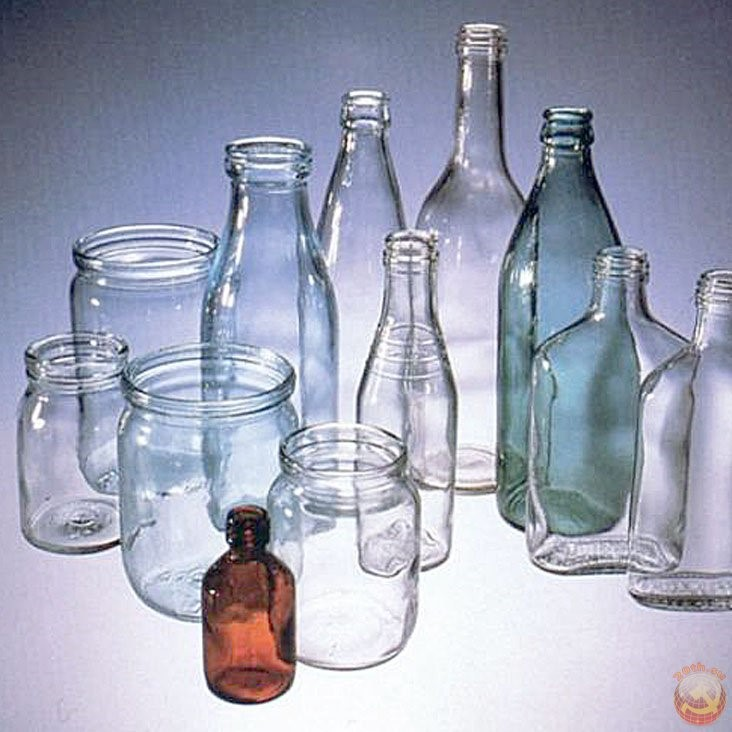Действует с 1995 года. В мае 1998 года преобразовано в Открытое Акционерное Общество «Стекольный завод имени Луначарского». До мая 2004 года основным видом деятельности общества являлось производство и реализация бесцветной стеклянной тары для технических, химических и пищевых жидкостей емкостью от 0,17 до 1 литра. Завод выпускал более 52 видов бутылок различной конфигурации. Завод начинает выпускать стеклянную тару из бесцветного стекла марки МТО - бутылку стеклянную для крови, трансфузионных и инфузионных препаратов емкостью 0,25 и 0,45л. 2008 – 2009гг. – несмотря на финансовую нестабильность в стране и мире на заводе продолжается расширение производства. Продолжено строительство второй стекловаренной печи, ведется реконструкция цеха приготовления шихты.
ЗАО «Строммашина»
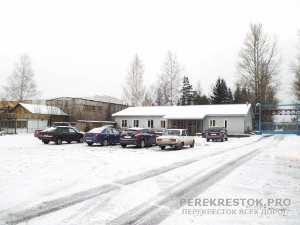АО «Строммашина» известно с 1967 года. Завод производит и ремонтирует машины различного назначения и механизмы. В том числе строительные и дорожные машины, автопогрузчики. Оказывает услуги по металлообработке. БОЛОГОВСКИЙ ЗАВОД СЛИЛСЯ С КОЛОМЕНСКИМ, КОТОРОЕ выпускает емкостное оборудование для топливно-энергетического комплекса, строительно-монтажных организаций, сельскохозяйственной отрасли, Минобороны. Это позволит «Строммашине» выйти из сложного кризисного состоянияна «Строммашине» сохранился большой станочный парк, есть костяк сотрудников.
Филиал ОАО «РЖД» - бологовский железнодорожный узел
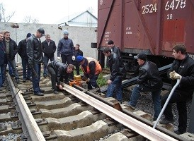 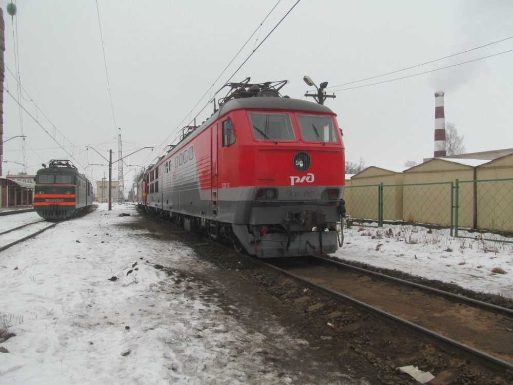 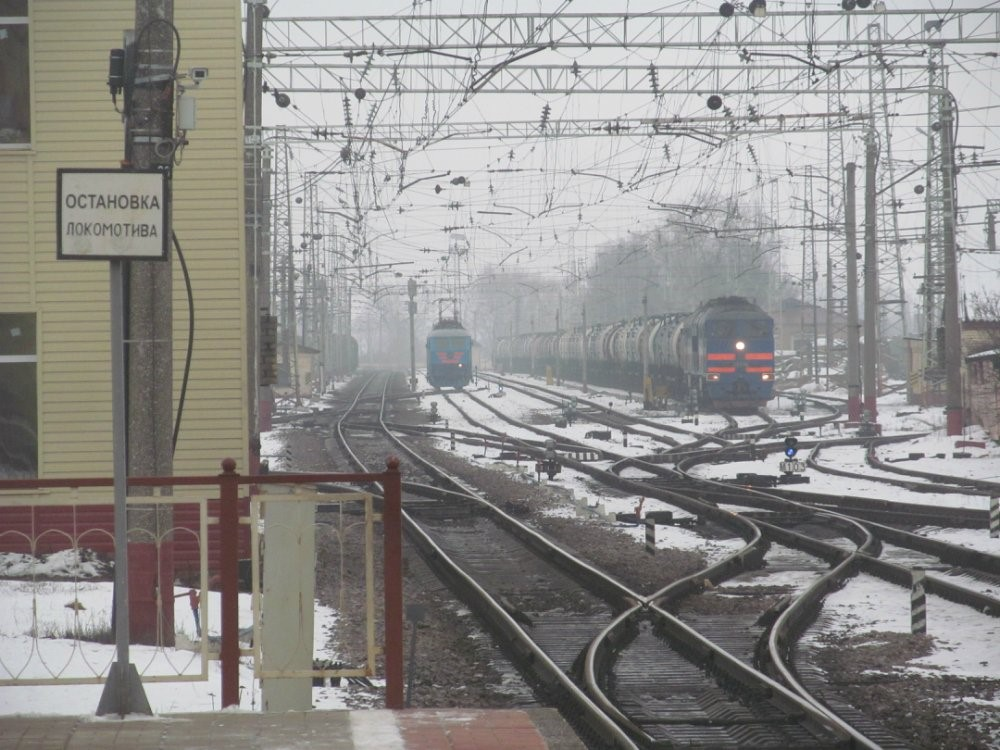Предприятия железнодорожного транспорта в последние 6 лет являются основными градообразующими предприятиями. Это, прежде всего, структурные подразделения Московского отделения Октябрьской железной дороги филиала ОАО «РЖД». Компания РЖД Октябрьская железная дорога Московское отделение находится в Бологом. К сферам деятельности фирмы можно отнести управление и обслуживание железных дорог.
Бологовский железнодорожный узел сформировался в конце XIX — начале XX века. В 1870 году, для связи речного порта Рыбинск с Санкт-Петербургом, была построена Бологое-Рыбинская железная дорога, в 1897 — Бологое-Псковская железная дорога, в 1907 году — Бологое-Полоцкая железная дорога. Таким образом, станция Бологое Николаевской железной дороги, открытая в 1850 году, стала крупным узлом с движением в пяти направлениях (Москва, Санкт-Петербург, Рыбинск, Псков, Полоцк). На станциях Бологое-I, Медведево и Бологое-II имелись паровозные депо, на станциях Бологое и Медведево — вагонные депо.
Бологовский узел — радиального типа, обслуживает, в основном, транзитное движение. Участок Москва — Санкт-Петербург — двухпутный, электрифицированный, пассажиронапряженный, на участке осуществляется движение скоростных поездов. Участок Рыбинск — Псков — однопутный, неэлектрифицированный, грузонапряженный. Участок Бологое — Великие Луки — однопутный, неэлектрифицированный, малодеятельный.
В узел входят 19 предприятий железнодорожного транспорта различной подчиненности:
- Эксплуатационное локомотивное депо Бологое ТЧЭ-4;
- Ремонтное вагонное депо Бологое ВЧДР-3;
- Эксплуатационное вагонное депо Бологое ВЧДЭ-4;
- Бологовская дистанция пути ПЧ-5;
- Бологовская дистанция энергоснабжения ЭЧ-2;
- Бологовская дистанция сигнализации, централизации и блокировки ШЧ-4;
- Медведевская дистанция сигнализации, централизации и блокировки ШЧ-3;
- Путевая машинная станция № 82;
- Путевая машинная станция № 292;
- Восстановительный поезд № 3022 ст. Бологое;
- Пожарный поезд ст. Бологое;
- Бологовский региональный центр связи РЦС-8;
- Региональный вычислительный центр РВЦ-2;
- База запаса локомотивов Бологое;
- Резерв проводников Бологое;
- Бологовский региональный участок Октябрьской дирекции пассажирских обустройств;
- Бологовский производственный участок Московской механизированной дистанции погрузочно-разгрузочных работ;
- Стрелковая команда ст. Бологое Московского отряда ведомственной охраны;
- Бологовский отряд ведомственной охраны.
На узле работает более 4 000 человек.